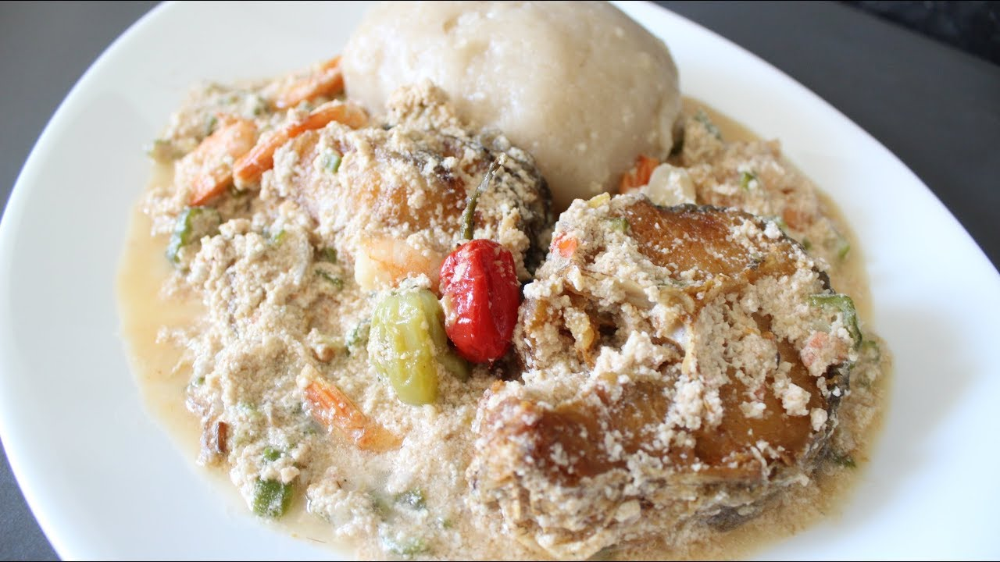
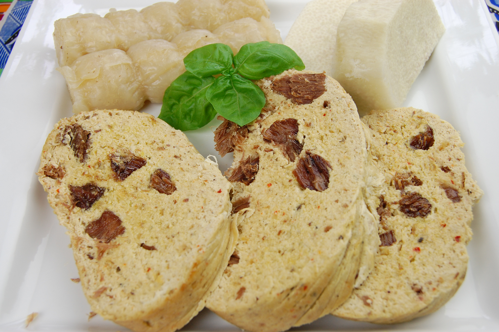
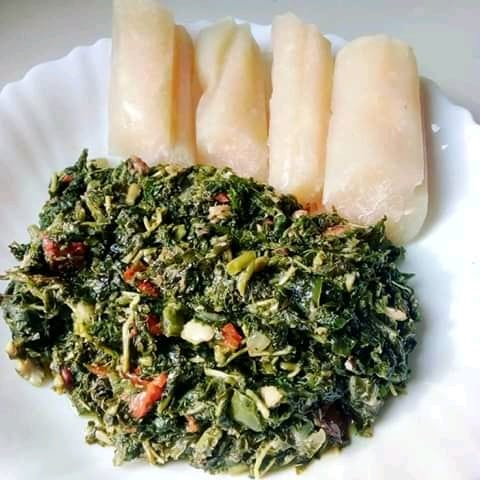
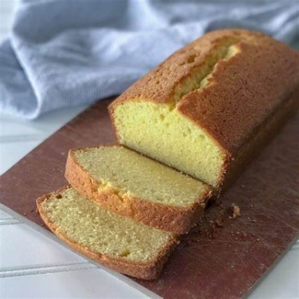

Issus d’une longue recherche, nos produits proviennent du décorticage industriel et de la transformation des graines de courge biologique à coque dure propres à certains terroirs d’Afrique. Leur nom scientifique est cucumeropsis mannii. C’est la reine des graines de courge. Elle possède des vertus exceptionnelles en Santé, Cosmétique, Diététique .
Par la recherche, l’industrialisation et la commercialisation nous travaillons pour mettre à votre disposition les produits dérivés de cette graine de courge pour votre Santé, Nutrition, Beauté et Bien-Être. Nous avons le souci développer l’agro-industrie et l’emploi local tout en préservant l’environnement. Chez nous vous achetez plus qu’un produit: vous êtes acteur d’un développement local tout ayant du bien-être. Nous sommes aussi propriétaires de la marque déposée Ngon .
| 1988 | 1985 | 2015 | 2016-2017 | 2017 | 2018 | 2019 | 2020 |
|---|---|---|---|---|---|---|---|
| Début de la recherche | Premier Brevet en France | Fin du prototype opérationnel. Deuxième Brevet d’invention à OAPI. | Construction des machines et de l’usine pilote. | SARL créé en octobre 2017, début du décorticage industriel. | Mise en place de la section Huilerie : Huile et Farine 2018. | Création et démarrage de la commercialisation des produits innovant a base de pistaches. | Certification Biologique. |
Historiquement parlant, les graines de courges sont conseillées aux hommes notamment pour l’entretien de la prostate. Cependant, les recherches montrent que cette graine reine a de nombreuses vertus pour tous, femmes comme hommes que nous résumons dans le slogan Santé et beauté aux 5 étoiles. Ces cinq étoiles sont:
L’huile de Pépins de Courge est traditionnellement conseillée
dans la prévention de l’hypertrophie bénigne de la prostate (adénome). Une étude publiée
dans le « Journal of Medicinal Food » a évalué son effet sur l’hyperplasie de la
prostate induite par la testostérone chez l’animal. Pour connaitre bien l’histoire,
cette étude a conclu au bénéfice préventif de l’huile de pépins de courge pour inhiber
l’hyperplasie de la prostate induite par la testostérone. Une autre étude publiée dans «
Urologia Internationalis » a même permis d’obtenir une régression des marqueurs de
l’hypertrophie prostatique. L’huile de Pépins de Courge est donc tout à fait
recommandable dans le cadre de la prévention de l’adénome prostatique, bien avant le
stade chirurgical de la prostate.
Conseil d’utilisation : par voie orale, 1 cuillère à café
par jour d’huile de Pépins de Courge en complément de l’utilisation d’autres
huiles
L’huile végétale de Pépins de Courge est un excellent anti-âge, notamment grâce à sa forte teneur en polyphénols à l’activité anti-oxydante. Ses molécules captent les radicaux libres à l’origine de la formation des rides et du vieillissement cellulaire. Riche en acide linoléique, cette huile va également favoriser la régénération cutanée, en plus d’être très nourrissante.
l’huile de Pépins de Courge est intéressante en soin des peaux matures.
Conseil d’utilisation : par voie cutanée, quelques gouttes en massage sur les zones concernéesL’huile de Pépins de Courge va nourrir en profondeur la fibre
capillaire pour la réparer, l’entretenir et la renforcer. Elle va ainsi assouplir,
adoucir et fortifier les cheveux, afin qu’ils deviennent plus résistants aux agressions
extérieures.
Conseil d’utilisation :en bain d huile, en masque
capillaire
Avec une dominante en acides gras polyinsaturés, l’huile de
Pépin de Courge est une excellente huile diététique pouvant entrer dans un régime
cardio-protecteur, anti-cholestérol. Elle est largement composée d’oméga 6, il sera donc
important de consommer des huiles riches en oméga 3 en parallèle afin d’équilibrer le
ratio oméga 6/oméga 3.L’huile de Pépins de Courge “Ngon” est également très riche en
tocophérols gamma, et contient des minéraux dont le zinc et acides aminés (citrulline,
cucurbitine).
Conseil d’utilisation :par voie orale, 1 à 2 cuillères à
soupe d’huile de Pépins de Courge servira à couvrir les apports journaliers
conseillés en oméga 6. A utiliser en assaisonnement sur des salades par
exemple.
Autres huiles végétales adaptées : les huiles de Lin ou de Périlla sont très
intéressantes en nutrition car elles sont particulièrement riches en oméga 3. Elles
permettent d’équilibrer le rapport oméga 6/oméga 3. Il est recommandé d’apporter 5
fois plus d’oméga 3 que d’oméga 6 (ANSES).
pour connaitre l’histoire, nos graines de courges sont particulièrement riches bien au-delà de la moyenne, c’est en grande partie à cause de la qualité du sol dans laquelle elle puise l’essentiel de ses nutriments, de la zone agro-écologique en Afrique équatoriale. Les graines de courges qui y poussent, notamment les graines à coque dure sont cultivéés tous les deux ans ce qui contribue à les maintenir comme les plus riches dans leur catégorie.
Notre huile est pressée à froid dans nos installations, sans aucun ingrédients ajouté, et filtrée par une décantation prolongée de plusieurs semaines afin de ne pas perdre les nutriments ni de les contaminer.
Les éléments biochimiques les plus abondants sont entre autres :
Pourquoi « allégée » :
Tout simplement car elle est allégée
en huile (moins 70%)
Elle est très concentrée en protéines et en minéraux.
Un
produit diététique parfait pour les sportifs
La sauce pistache, une découverte culinaire délicieuse et
surprenante, promet de réveiller vos papilles pour une expérience gustative inoubliable.
Issue d’une combinaison ingénieuse de pistaches finement moulues, d’épices exquises et
d’autres ingrédients secrets, cette sauce offre une explosion de saveurs qui transcende
les attentes culinaires.
D’une texture crémeuse et d’une teinte verdoyante, la sauce pistache apporte une
touche d’originalité à une variété de plats. Son mariage subtil entre la douceur des
pistaches et la complexité des épices crée une harmonie parfaite qui saura ravir les
palais les plus exigeants. Que ce soit pour accompagner des plats traditionnels ou pour
sublimer des créations contemporaines, la sauce pistache se révèle polyvalente, ajoutant
une dimension gustative unique à chaque bouchée.
Prête à surprendre les amateurs de cuisine aventureux, la sauce pistache incarne
l’art de marier des saveurs contrastantes de manière équilibrée. À la fois délicate et
intense, cette découverte culinaire est destinée à devenir un incontournable dans votre
répertoire gastronomique, transformant chaque repas en une expérience sensorielle
délicieusement inédite.



Le Cake, véritable délice sucré, s’inscrit comme un
merveilleux dessert à savourer sans modération. Cette création gastronomique offre
une expérience sensorielle unique, une véritable symphonie de saveurs exquises qui
éveillent les papilles à chaque bouchée.
Composé avec soin, le Ngon Cake est une harmonie parfaite entre des textures
moelleuses et des saveurs riches. Son nom, évocateur de délices, promet une
expérience gustative exceptionnelle. Les ingrédients soigneusement sélectionnés se
marient dans une danse gustative, créant une fusion équilibrée de douceur et de
complexité.
Que ce soit la première ou la dernière bouchée, le Ngon Cake séduit par sa
capacité à transporter ceux qui le dégustent dans un univers de plaisir sucré. Les
nuances subtiles et les notes délicates se dévoilent progressivement, offrant une
expérience gourmande qui émerveille les sens.
Le Ngon Cake incarne bien plus qu’un simple dessert ; c’est une invitation à un
voyage gustatif exceptionnel. À partager entre amis ou à savourer en solitaire,
chaque instant avec le Ngon Cake est une célébration des plaisirs sucrés, une
expérience à déguster sans retenue.
